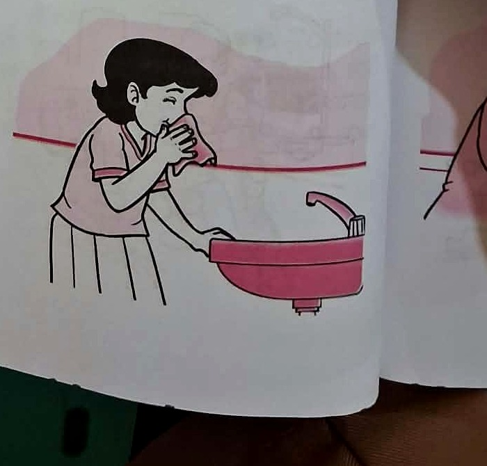
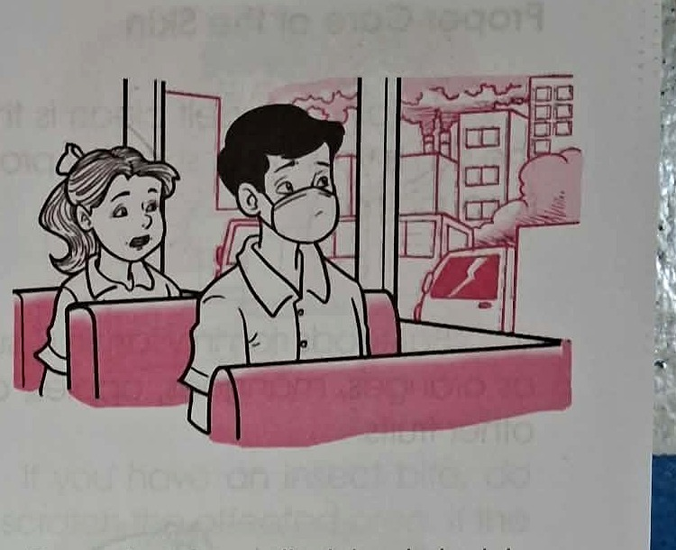
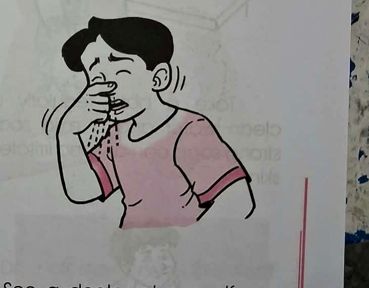
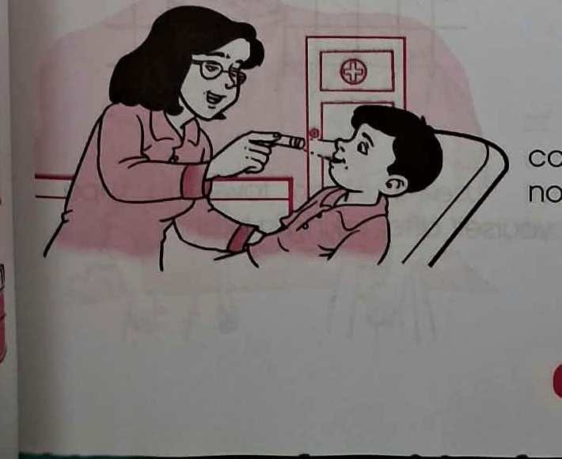

DO
Clean Gently
Use a clean, soft tissue, cotton, or handkerchief when cleaning your nose. Rough cloth can cause irritation.
Learn simple ways to keep your nose safe and cared for through pictures, short explanations, practice, and games.
Look, think, choose, and learn!
What should you do to protect your nose?
You are riding in a bus and the air outside looks polluted. What is a safer choice?
Think about what you do when your nose needs care.
These are the situations shown in the lesson source.

Use a clean, soft tissue, cotton, or handkerchief when cleaning your nose. Rough cloth can cause irritation.

When traveling, cover your nose with a clean tissue or handkerchief, or wear a nose mask to help avoid inhaling polluted air.

Blowing your nose too hard can hurt your nose as well as your ears.

See a doctor at once if you can hardly breathe through your nose.
Do not put small objects inside your nose. You might inhale them and may injure your nose.
Small chunks: explain → show → practice → check.
Let's decide together.
Maria needs to clean her nose. Which should she choose?
Match each situation to the best action.
Apply what you learned to a new situation.
Ben is traveling and the air outside is polluted. What could help protect his nose?
Flip the cards to remember the rules.
Tap to reveal
Use a clean, soft tissue, cotton, or handkerchief.
Tap to reveal
Small objects may be inhaled and may injure the nose.
Short quiz with three choices.
Can you become a Nose-Care Champion?
Tell the teacher or a partner three things you can do to take care of your nose.
One small habit can make a difference.
Choose one habit you will remember today.
You finished the lesson journey!
Great work! Keep practicing safe and healthy habits.
Everything important from the lesson in one place.
Good nose care means being gentle, keeping harmful objects away, protecting your nose from polluted air, and getting help when needed.
Use this area for guided discussion and observation.